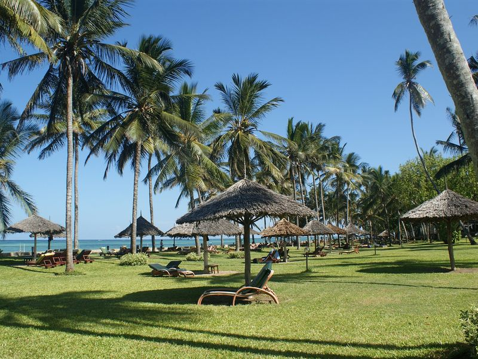
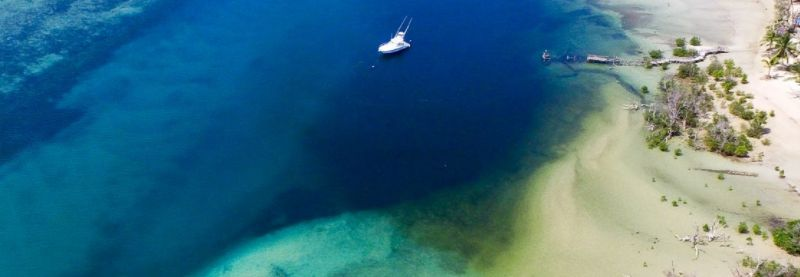
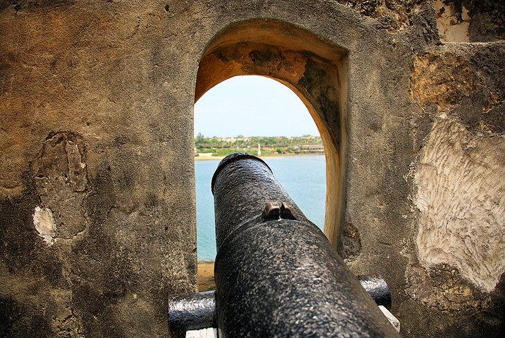
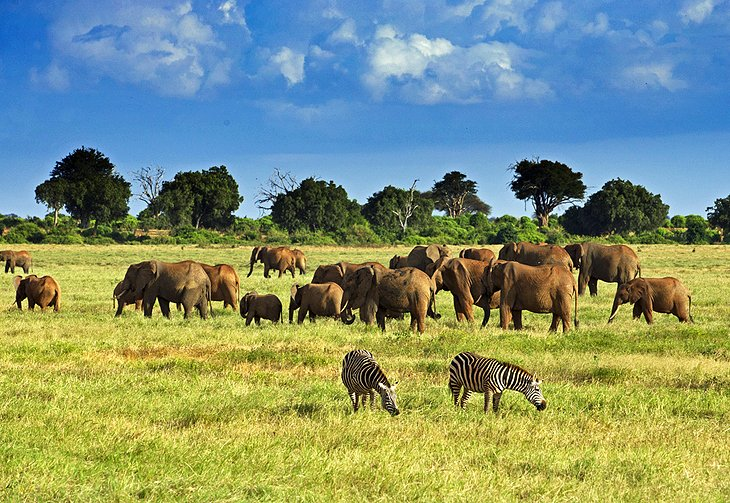

You will get to experience some of the best tropical sites in Kenya. We will take a look at a few of them.
Tropical sites in Kenya
There are so many beautiful tropical sites in Kenya.Some of them are:
Lamu Island
Lamu island is situated in the northeast part of Mombasa and oozes old-worldcharm.Visiting here is like stepping back in time.Dhows,plow the habor,donkeys still rule the streets here.Most of Lamu's population is Muslim, and both men and women dressin traditional attire.
Top attraction on the island include

Funzi and Mombasa Island
Funzi island is one of the archipelago off the coast of Kwale county,south of Mombasa in the Indian Ocean.It is a dreamlike place laced with sand banks and scattered about with some eco-lodges.There are dugout canoe in the mangrove and crocodile safari on the Ramisi river.Funzi is also home to 1,500 members of the Shirazi tribe. Take a lunch break to enjoy local cuisine.Let the sweet life entice you and discover the authentic natural heritage of Funzi Island.
 below are more tropical destinations;
- Diani beach
- Chale Island
- Malindi
- Mombasa beaches
- Kisumu beaches

Tembea Kenya and enjoy these beautiful sceneries and also get to enjoy our special,nutitious traditional foods.Did you know that that every community in kenya pride in there unique culture and traditional beliefs!!!At Happy Travel Agencie,we get to give you a special treat of such stories that will blow your mind.You willalso get to sample foodsfrom different communities that are delitious and mouth watering.
Popular Trourist destinations in Kenya
There are many travel destinations in kenya.Some of them are:

Amboseli National Reserve is one of the most popular tourist parks.The name "Amboseli" comes from a maasai word meaning "salty dust,"a description forthe park'sparched conditions. The reserve is one of the best places to view large herds of elephants up close.Other wildlife commonly spotted in the park includes big cats, such as lion and cheetah,as well as girraffe,impala,eland,waterbuck,gazelle, and more than 600 speciesof birds.
Tsavo Natinal Park
Tsavo National park is Kenyas largest park.is sliced in two;
- Tsavo Eest
- Tsavo West
Tsavo East is famous for photo-worthy sightings of large elephant herds rolling and bathing in red dust.
Tsavo West is wetter and topographically more varied, with some of the most beautifulscenery in the northern reaches of the park.
Togeher these parks comprise four parcent of the country's total area and encompass rivers,waterfalls,savannah,volcanic hills, amassive lava-rock plateau, and an impressive diversity of wildlife.
Lake Nakuru National Park

Lake Nakuru National Parkis famous for its huge flocks of pink flamingoes.The park has more than 450 species of birds recorded.Other wildlife include,Lions,leopards,warthogs,waterbucks,pythons, and white rhinos.
Other popular sites are;
- Mount Kenya National Park
- Ole Pejeta Conservancy
- Nairobi National Park
- Hell's Gate National Park
At Happy Trails we make sure that you are comfortable and you get to visit destination of your choice.Above destinations are just a few of diverse tourist attraction sites in Kenya. You will be provided with skilled and customer friendly tour guides conversant with the area/s you choose to visit.